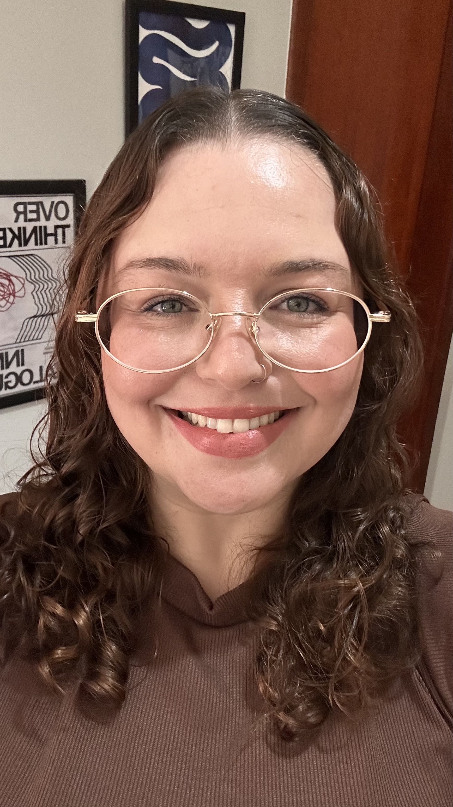

Atendo adolescentes e adultos cansados de se explicar. Ansiedade, sobrecarga, vínculos que drenam e, muitas vezes, um jeito neurodivergente de funcionar que ninguém tinha nomeado ainda.

Nenhuma abordagem funciona sem confiança real. Desde a primeira sessão eu explico o processo em vez de só conduzi-lo, porque você decide melhor quando entende o que está acontecendo.
Trabalho pela Terapia Cognitivo-Comportamental, com especialização em TCC e em Neuropsicologia (em formação). A técnica é a base, não o tom do atendimento.
Se em algum momento sentirmos que não é a combinação certa, eu digo. Prefiro te ajudar a achar a pessoa certa do que manter um processo que não está funcionando.
Muita gente chega sem saber exatamente o que sente, só que algo pesa. Parte do trabalho é dar nome a isso. É difícil lidar com o que ainda não tem forma.
"Você não precisa chegar com tudo organizado. Cinquenta minutos pode não ser suficiente, e tudo bem. É o começo." Darielle Mininel, psicóloga clínica
O corpo cobrando o que a mente tenta ignorar. A sensação de que algo está errado mesmo quando, de fora, tudo parece bem.
Cansaço que descanso nenhum resolve. Dar conta de tudo por fora enquanto por dentro já não sobra nada.
Dias em que nada faz sentido. Dificuldade de sentir prazer, de se motivar, de acreditar que algo pode mudar.
Padrões que se repetem. A função de ser sempre quem cede, quem sustenta, quem se explica para caber no espaço do outro.
Diagnóstico já feito ou ainda em dúvida. Entender como isso organiza suas emoções, suas relações e seu funcionamento no dia a dia.
Ansiedade, dificuldade escolar, autoestima ou suspeita de neurodivergência. Um espaço próprio, sem tradução para os pais.
Muitas mulheres chegam pedindo ajuda para a ansiedade e encontram, na terapia, uma explicação mais completa. Anos camuflando estranhezas, decodificando regras sociais no esforço, se policiando para não parecer demais nem de menos. Esse trabalho invisível tem nome, e ele explica exaustão social, sensação crônica de estar atuando e dificuldade de dizer o que realmente sente.
Se isso soa familiar, uma parte da terapia é justamente diferenciar o que é ansiedade do que é sobrecarga de manter uma máscara em tempo integral.
Adaptação, solidão, sobrecarga de recomeçar sozinho, saudade que não cabe em uma ligação de domingo. São questões que pedem alguém que entenda tanto o idioma quanto o que significa reconstruir a vida fora do lugar de origem. Atendo horários compatíveis com fusos da Europa e da América do Norte.
Quando a dúvida diagnóstica é o que está travando o processo, ofereço avaliação estruturada, com instrumentos validados pelo SATEPSI, aplicação online e devolutiva por escrito. É um processo à parte da psicoterapia, indicado tanto para adultos que investigam diagnóstico tardio quanto para adolescentes encaminhados pela escola ou pela família.
Perguntar sobre avaliaçãoUso a TCC como abordagem principal, porque ela me dá instrumento prático pra trabalhar junto com você, não só pra te ouvir. A pós em Neuropsicologia (em formação) entra quando a queixa emocional esbarra em um jeito neurodivergente de funcionar, o que acontece mais do que se imagina.
"Eu não separo técnica de humanidade. Uma sustenta a outra."
Uma mensagem pelo WhatsApp. Contamos brevemente o que te trouxe até aqui e agendamos a sessão inicial.
Um encontro para nos conhecermos, sem pressa e sem roteiro fechado.
Sessões semanais de 50 minutos, por Google Meet ou Zoom, com horário fixo dentro do pacote mensal.
A duração é individual. Sigo enquanto fizer sentido para o seu processo, não por um número fechado de sessões.
Funciona pelo mesmo motivo que a presencial. O vínculo se constrói pela escuta e pela consistência, não pelo espaço físico. Para quem lida com deslocamento, agenda apertada ou mora fora do Brasil, muitas vezes o online é o que viabiliza manter o processo.
Você não precisa ter certeza antes de falar comigo. É exatamente para isso que existe o primeiro contato, uma conversa sem compromisso para entender se faz sentido para os dois lados.
Não. Muita gente chega pela ansiedade ou pelo cansaço e a investigação da neurodivergência acontece dentro do processo, se fizer sentido. A avaliação formal é um passo à parte, não um pré-requisito.
Atendo. Para menores de idade, a sessão inicial inclui uma conversa com os responsáveis sobre expectativas e sigilo, e depois o espaço terapêutico passa a ser do adolescente.
Não. O atendimento é particular. Emito recibo para reembolso quando o plano do paciente cobre esse formato.
Atendimento particular, com sessão avulsa e pacote mensal com horário fixo semanal. Prefiro te explicar os valores e formas de pagamento diretamente na conversa inicial, para entender seu caso antes de fechar qualquer coisa.
Sem compromisso. Só uma mensagem para entender se faz sentido para você, e para mim.